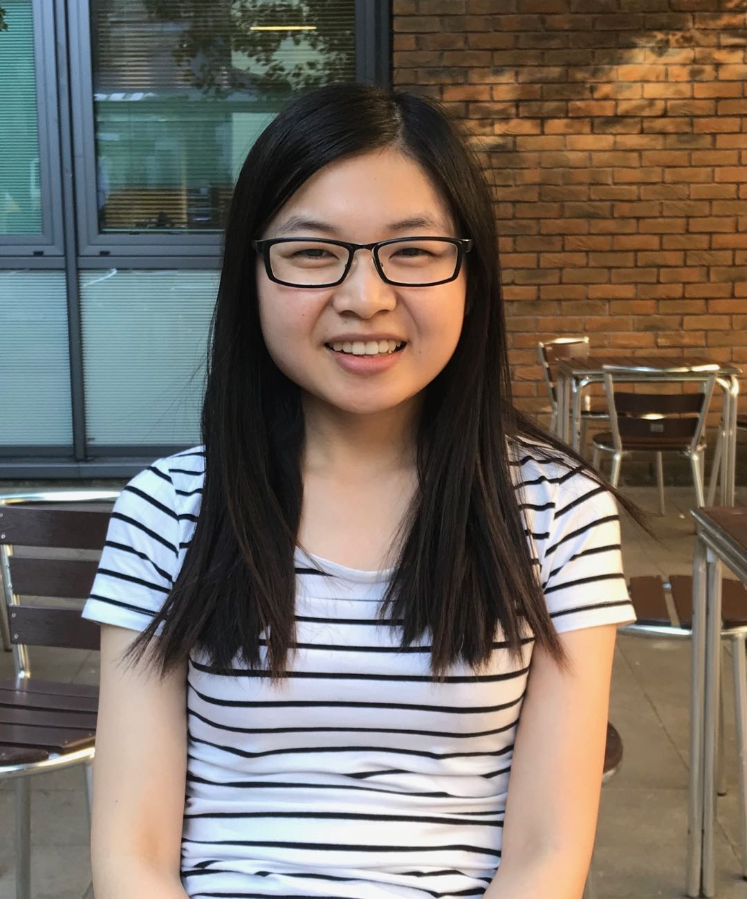

Yihong Dong
dongyh@sjtu.edu.cnShanghai Jiao Tong University
The International Workshop on Reliable Intelligent Software Engineering (RISE) will bring together researchers and practitioners to study the reliability of software artifacts, development workflows, and engineering agents across the software lifecycle.
AI assistants and software agents support requirements analysis, architecture and design, implementation, testing, and maintenance, yet their outputs and workflows can fail in ways that are difficult to detect and reproduce. RISE connects techniques from these development stages through explicit failure models, independent evaluation, and practical assurance needs.
How can we establish, measure, and maintain reliability in AI-assisted and agentic software engineering?
The proposed first edition examines reliability as software, requirements, workflows, and agents change, including recursive self-improvement of software engineering agents. The software being developed need not itself contain AI. Short contribution pitches, a shared engineering scenario, facilitated working groups, and cross-group scrutiny of reliability claims will connect research and industrial practice.
We welcome contributions on the following topics. Each submission should connect its engineering setting to a reliability objective or failure mode and explain the evidence available or still needed.
Submissions may address one or several topics. General AI applications and productivity-only evaluations must connect to a concrete reliability question in AI-assisted or agentic software engineering. Preliminary ideas, positions, and failure reports are welcome; completed solutions are not required.
RISE welcomes focused research, empirical investigations, early results, position papers, failure analyses, negative results, tools and demonstrations, and industrial experience on reliable intelligent software engineering. Contributions should connect their engineering setting to a reliability objective or failure mode and explain the evidence available or still needed.
| Type | Length | Publication |
|---|---|---|
| Research and experience paper | Up to 8 pages, including references | Planned FSE 2027 Companion Proceedings in the ACM Digital Library, subject to ACM/FSE requirements. |
| Short and position paper | Up to 5 pages, including references | Planned FSE 2027 Companion Proceedings in the ACM Digital Library, subject to ACM/FSE requirements. |
| Extended abstract | Up to 2 pages, including references | Planned FSE 2027 Companion Proceedings in the ACM Digital Library; explicitly classified as extended abstracts and APC-free. |
| Discussion statement | 1 page | Non-archival. Shared only with the author's permission. |
Research and experience papers present focused research, empirical investigations, or industrial experience with evidence appropriate to the claims. Short and position papers present early results, research positions, failure analyses, negative results, or tools and demonstrations. Extended abstracts present emerging ideas, research questions, demonstrations, or discussion contributions.
These are workshop contributions intended to stimulate research and discussion. Preliminary and conceptual work is welcome; position papers need not provide a complete implementation or large evaluation.
Discussion statements offer a separate route for practitioners and emerging projects to bring a case or question without publishing a paper. Please remove confidential details.
Each submission should identify:
All archival formats will follow the ACM template specified in the finalized CFP in consultation with FSE. Optional artifacts must be shareable and clearly licensed; artifacts are not a prerequisite for acceptance. The submission system and formatting instructions will be published after workshop acceptance.
All three archival formats will undergo double-anonymous review; manuscripts and linked review materials must be anonymized. Each submission will receive at least three reviews by non-conflicted PC members, followed by PC discussion. Review criteria are relevance, originality, clarity, technical soundness, evidence appropriate to the format and maturity of the work, and potential to stimulate discussion. Acceptance will follow these criteria, not a quota. Discussion statements will receive three brief PC assessments for relevance and discussion value.
Archival submissions must be original, unpublished, and not under concurrent review elsewhere. Conflicted reviewers will not access or discuss the affected submission. A non-conflicted organizer will manage the decision; if all organizers are conflicted, a designated non-conflicted senior PC member will handle it. The finalized CFP will specify conflicts and applicable publication policies.
Accepted contributions in all three archival formats are intended for the FSE 2027 Companion Proceedings in the ACM Digital Library, subject to workshop acceptance and ACM/FSE production requirements. Research and short papers will follow ACM Open coverage, applicable article processing charges (APCs), and available waivers.
The extended-abstract format satisfies FSE 2027's requirement to offer an explicitly APC-free option of at most five pages; RISE's extended abstracts are limited to two pages, including references. The CFP and proceedings metadata will identify this article type. A short paper is not APC-exempt solely because it is five pages or fewer. Registration fees are separate. Discussion statements will not appear in the proceedings.
At least one author of every proceedings contribution must register for the workshop. We will require an in-person presentation; FSE supports remote presentations only in emergencies. Attendance without a submission is also welcome, subject to registration and room capacity.
Under FSE and SIGSOFT policy, organizers and their directly supervised students, postdocs, and employees may not submit papers to RISE. This restriction also applies to submitted discussion statements. It does not prevent attendance or participation in working sessions. Eligible PC members may submit with independent handling; in their PC role, they will have no access to confidential discussions or reviewer identities for their own submissions. They will receive normal author feedback.
Published ACM authors and their co-authors must comply with all ACM Publications Policies, including the Publications Policy on Research Involving Human Participants and Subjects. The finalized call will include ACM's required policy notice and any further FSE production instructions.
A full-day, in-person workshop is proposed. Approximately 65% of non-break time will be devoted to collaborative work and discussion. All session times below are in Shenzhen local time (UTC+8).
| Time | Activity |
|---|---|
| 09:00–09:20 | Welcome, shared question, case, and output template |
| 09:20–09:55 | Challenge talk and questions Speaker to be confirmed |
| 09:55–10:55 | Contribution pitches Planned: 10–12 contributions across all formats |
| 10:55–11:10 | Coffee break |
| 11:10–12:10 | Shared-case clinic: joint diagnosis of failures and missing evidence |
| 12:10–13:10 | Lunch |
| 13:10–14:25 | Working groups: develop and challenge reliability evidence |
| 14:25–14:40 | Coffee break |
| 14:40–15:25 | Cross-group review: exchange analyses and seek counterexamples |
| 15:25–16:05 | Group reports and unresolved disagreements |
| 16:05–16:40 | Research agenda: prioritize five questions and identify follow-up owners |
| 16:40–17:00 | Closing discussion and release arrangements |
The final program, speaker, and workshop date will be announced after confirmation. Timing and duration will be coordinated with FSE based on submissions, registrations, and room allocation.
An illustrative order-cancellation case will give participants a common starting point: a revised requirement demands exactly one refund and an audit record, but a stale test oracle checks only the order status. Groups will examine missing obligations, repeated refunds, and the evidence required across development handoffs. This is a constructed example, not a reported production incident or an established benchmark.
Groups of four to six will form around challenges emerging from accepted contributions. Each may adapt the shared case or analyze a contributed case, recording a reliability objective, failure mechanism, evidence, unresolved assumptions, and a proposed recheck or recovery action. Groups will exchange analyses to seek counterexamples.
A case package containing requirement versions, an architecture sketch, a plan, a patch, tests, execution records, and an intentionally incomplete solution is planned for circulation two weeks before the workshop. Preparation will be optional, with no model subscription or live execution required; a printable version will be available. Intended outcomes are annotated cases, a reusable reliability-evidence template, and five prioritized research questions with evaluation tasks and volunteer follow-up owners. Materials are planned for release within 30 days, subject to contributor consent and appropriate licenses.
Shanghai Jiao Tong University
Wuhan University
Shanghai Jiao Tong University

Harbin Institute of Technology
Peking University
We propose the following 26 candidates, with expertise spanning requirements, architecture, AI-assisted development, testing, verification, and industrial practice, together with software reliability and assurance across the development lifecycle. We will finalize the committee through invitations, maintaining institutional and geographic breadth and matching its size and expertise to submission volume.
The following are proposed candidates. Inclusion does not indicate confirmed participation. The confirmed committee will be announced following invitations.
For questions about the workshop scope, submissions, or participation, please contact:
Yihong Dong
School of Computer Science, Shanghai Jiao Tong University
Email: dongyh@sjtu.edu.cn
Jia Li
School of Computer Science, Wuhan University
Email: jia.li@whu.edu.cn
Further information about the host conference is available on the FSE 2027 website.